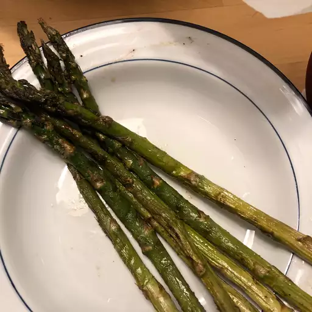

Fried Asparagus

Searching for the best summer side dish that comes together in minutes? Look no further than this easy cooked asparagus that's tossed in balsamic vinegar, seasoned with salt and pepper, and cooked until perfectly tender.
Ingredients
- Asparagus
- Salt and pepper
- Butter
- Balsamic vinegar
Steps
- Start by peeling one end of the asparagus to remove the hard parts of the stalk
- Heat butter in a pan and when heated, put the asparagus in the pan
- Sprinkle some salt and black pepper on the asparagus as it is cooking
- Pour balsamic vinegar onto the asparagus just as it is finished cooking
- Serve heated.